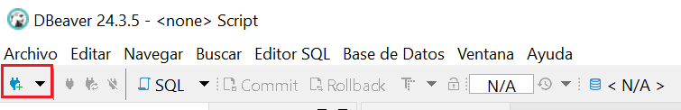

DBeaver¶

DBeaver es una herramienta gráfica y gratuita que permite gestionar múltiples bases de datos de forma visual. Algunas de las acciones que podemos realizar con esta herramienta son las siguientes:
-
Explorar la estructura de la base de datos (tablas, vistas, claves, relaciones…).
-
Consultar datos.
-
Modificar tablas, añadir registros o ejecutar scripts SQL sin salir del proyecto.
-
Probar consultas antes de implementarlas en el programa.
Los siguientes pasos ilustran como conectar a la BD de ejemplo plantas.db que ya tenemos copiada a la carpeta resources de nuestro proyecto.
1. Abre DBeaver
Inicia el programa y haz clic en el botón "Nueva conexión" (ícono de enchufe) o ve al menú Archivo > Nueva conexión.

2. Selecciona el tipo de base de datos
En la ventana de selección, elige SQlite y pulsa Siguiente.

3. Introduce la ruta donde se encuentra la BD y prueba conexión

Haz clic en "Probar conexión". Si todo está correcto, verás un mensaje de éxito.
Si DBeaver necesita un controlador (driver), te lo ofrecerá para descargar automáticamente.

Si la descarga falla, ve a https://github.com/xerial/sqlite-jdbc/releases y descarga el archivo sqlite-jdbc-3.50.3.0.jar

5. Finaliza y explora
Haz clic en "Finalizar". La nueva conexión aparecerá en el panel lateral izquierdo.
Desde allí puedes:
- Ver tablas, vistas, funciones y procedimientos
- Ejecutar sentencias SQL
- Consultar y modificar registros
- Exportar datos en distintos formatos